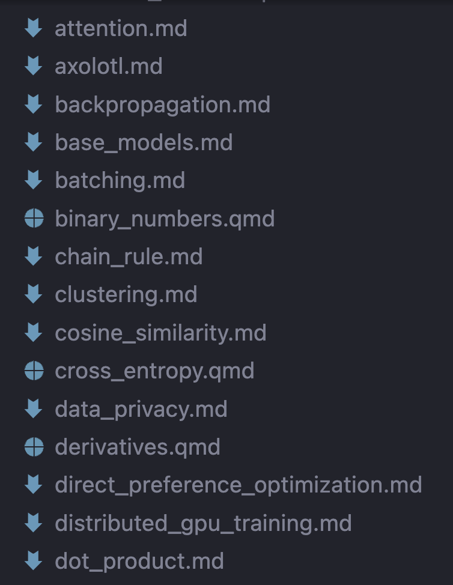
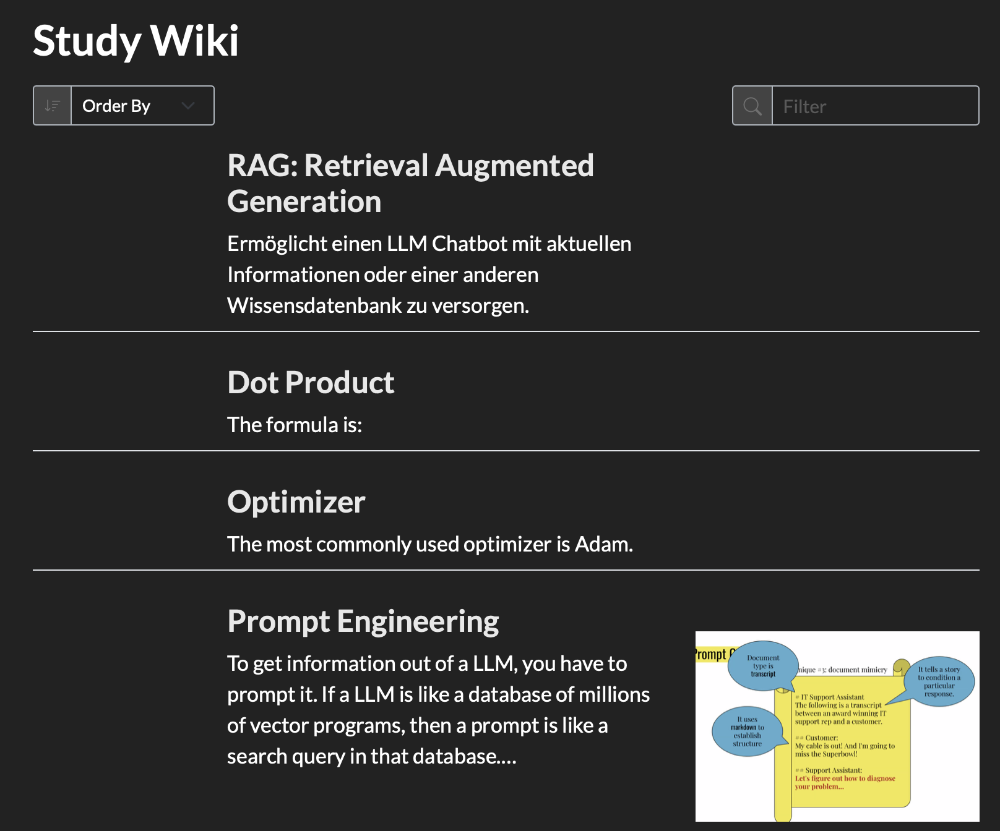

import plotly.express as px
df = px.data.tips()
fig = px.scatter(df, x="total_bill", y="tip", trendline="ols", height=250, width=600)
fig.data[1].line.color = "red"
fig.show()Machine learning is a deep and constantly evolving field. In an applied project, the details of models are typically compressed into a few lines of a configuration file. Take this excerpt from a configuration file for an LLM training run using Axolotl:
adapter: lora
lora_r: 32
lora_alpha: 16
lora_dropout: 0.05
gradient_accumulation_steps: 4
micro_batch_size: 2
num_epochs: 4
optimizer: adamw_bnb_8bit
lr_scheduler: cosine
learning_rate: 0.0002There are so many concepts packed into just 10 lines: low-rank adapters, backpropagation, batching, quantization, optimizers. Each of these decomposes into sub-concepts and sub-sub-concepts. The further you go down, the closer you get to pure mathematics. In this case, matrix factorization, calculus, binary arithmetic and trigonometry.
I’ve understood each of these at some point in the last 10 years, but I’m not “exam-ready” on all of them at all times. A year ago I started writing a set of notes that form a personal wiki for machine learning topics. In this article I’ll share the software and workflow I use.
This project helped calm some of my anxiety about forgetting. I can’t remember everything, but I can remember where to find it. Re-learning from a note I’ve written myself is much faster than learning from other sources.
Beware of pseudowork
Before I get into the details, I feel obliged to warn about pseudowork. Setting up note taking systems, reading books about learning, reading advice from successful academics, all of these feel productive but don’t accomplish the main goal: understanding and retaining the material. Endless tweaking of the system can be a form of procrastination.
In other words, don’t go too midwit:
With that warning out of the way, I’ll try to convince you that using Quarto for studying is worthwhile, even though it’s a little more complex than Apple Notes.
Quarto website as a personal wiki
A personal wiki is a repository of documents that are linked to each other.

Quarto is a scientific publishing system that is based on Markdown and supports code execution in Python, R and other languages. It can be used to create reports, books, slides and websites (including this one üòÑ). I use it to create a personal wiki for machine learning. It‚Äôs a collection of .qmd files that contain text, code snippets, formulas and interactive visualizations. The files are rendered to HTML and can be viewed in a browser. Notes (web pages) can be linked to each other.
File structure
Each concept gets its own file. For example, to learn about quantization I’ve created three files in the notes folder:
notes/binary_numbers.qmdnotes/quantization.qmdnotes/qlora.qmd
In binary_numbers.qmd, I’ve written about the binary number system starting with integers and then moving on to floating-point numbers. Hugging Face has an excellent guide on the topic from which I’ve copied visualizations.
In quantization.qmd I’ve written about how reducing the number of bits used to represent weights reduces the memory footprint and computational cost of neural networks. It has a link to binary_numbers.qmd because binary numbers are used in quantization. The qlora.qmd connects it to LoRA adapters.

When I come across a new concept or find myself unsure of an old one, I create a new file. Starting with a basic definition, I summarize the topic. The last time I had to manually calculate something using the chain rule was in 2017, so recently I refreshed the topic by writing a detailed chain_rule.md note.
Notes
Notes are a weave of Markdown, code snippets and images. If you’re familiar with Jupyter notebooks or R Markdown, you’ll feel right at home. Quarto’s tutorial is a great place to start.
Here’s an example of a note about derivatives:
I end every note with a sources section, e.g.
## Sources
- [Stackoverflow AI in your pocket](https://stackoverflow.blog/2023/08/23/fitting-ai-models-in-your-pocket-with-quantization/)
- [Transformers Quantization Documentation](https://huggingface.co/docs/transformers/quantization)
- [Quantization](https://huggingface.co/blog/merve/quantization)
- [4bit transformers](https://huggingface.co/blog/4bit-transformers-bitsandbytes)
- [A Gentle Introduction to 8-bit Matrix Multiplication for transformers at scale using Hugging Face Transformers, Accelerate and bitsandbytes](https://huggingface.co/blog/hf-bitsandbytes-integration)
- [LLM-Model-VRAM-Calculator](https://huggingface.co/spaces/NyxKrage/LLM-Model-VRAM-Calculator)in quantization.qmd. These can be links to blog posts, books, papers, documentation, YouTube videos or anything else that helped me understand the topic, like the VRAM-calculator in the last link.
Website
To turn this collection of files into a website, two additional files are needed:
index.qmd:
---
title: "Study Wiki"
listing:
contents: notes
sort: "date desc"
type: default
sort-ui: true
filter-ui: true
---and _quarto.yml:
project:
type: website
website:
title: "Study wiki"
format:
html:
theme: darkly
toc: trueThe overall structure looks like this:
_quarto.yml
index.qmd
notes/
binary_numbers.qmd
quantization.qmd
qlora.qmdTo render the website, run quarto render in the terminal. The website is then available in _site/index.html and can be opened in a browser. Typically, I render individual notes using the render button rather than the whole website.
And this is what the website looks like:

It has sorting and search functionality.
And this is what a note looks like:
It has a table of contents and references to sources. Quarto can be themed, here with the darkly theme.
IDE and extensions
I use Quarto with VSCode and the Quarto extension. I find Plotly to be the best for these notes because it’s interactive (tooltips, zoom, filter) without a need for customization.
Copilots are great at formulas and visualizations
Github Copilot and other code completers like TabNine and Supermaven can generate LaTeX formulas and interactive Plotly visualizations.
Using a copilot, you can fly through creating notes and illustrate them beautifully.
For example, if you’re writing a note about linear regression, you might ask Copilot for the formula:
Formula for linear regression:
and Copilot will generate:
$$ y = \beta_0 + \beta_1 x_1 + \beta_2 x_2 + \ldots + \beta_n x_n $$which renders as:
\[ y = \beta_0 + \beta_1 x_1 + \beta_2 x_2 + \ldots + \beta_n x_n \]
or ask for a visualization:
Visualization of linear regression using a sample dataset:
and Copilot might generate:
Using a separate chat like ChatGPT also works, but requires more copy-pasting, which breaks the flow.
Discussion
Pros
- Enhance understanding with code snippets, formulas and interactive visualizations
- Collect the best learning resources in one place
- Free, open-source software running locally without needing an internet connection
- Text files are future-proof and can be read by any text editor
- Possible to version control with Git
- Easy to back up
- Gets better over time as more notes are added and interlinked
- Visualizes learning progress in a satisfying way
Cons
- It doesn’t work well on mobile. You could find a way to read the notes, but editing is not practical
- Over-engineering notes with interactivity can turn into pseudowork
- Creating many shallow notes using an LLM can also be pseudowork
- Learning curve if you’re not familiar with Markdown and a programming language supported by Quarto
If you’re in machine learning, data engineering, or a similar technical field I highly recommend Quarto for creating a personal wiki. If you don’t need code, formulas or interactive visualizations, Obsidian is an easier alternative that is based on Markdown and local-first. Finally, Apple Notes and Microsoft OneNote are OK too, if you don’t mind being locked into their ecosystems.
Further reading
- The shortification of learning by Andrej Karpathy
- The Complete Guide to Memory by Scott Young and Jakub Jílek